PARTICIPAÇÕES DO BRASIL EM COPAS
- Breve resumo do tema abordado:
- Durante esses quase 1 século de Copa do Mundo a seleção canarinho é a única a ter participado de todas as copas, nós vamos mostrar um pouco sobre cada participação.
Voltar ao Início
COPA DO MUNDO 1930
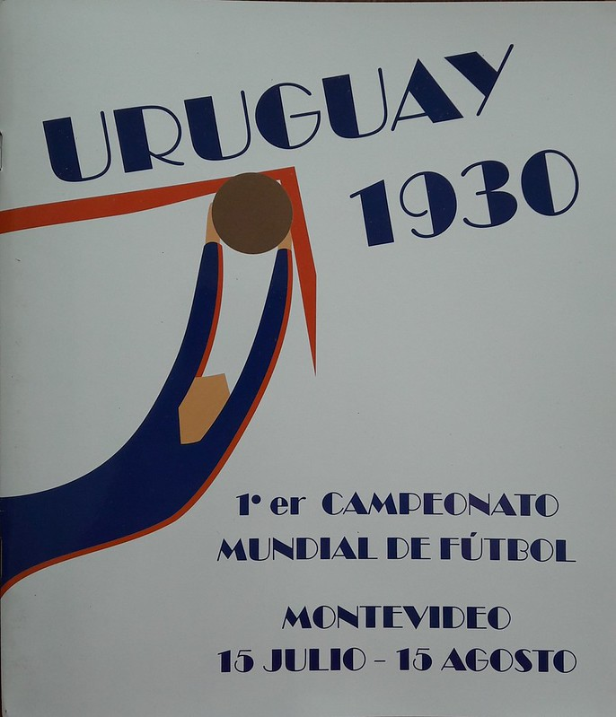
- Sede: Uruguai
- Participação: O Brasil foi eliminado na Fase de Grupos. Perdeu para a Iugoslávia (2x1), venceu a Bolívia (4x0), mas não avançou.
- Destaque da seleção: Preguinho
COPA DO MUNDO DE 1934
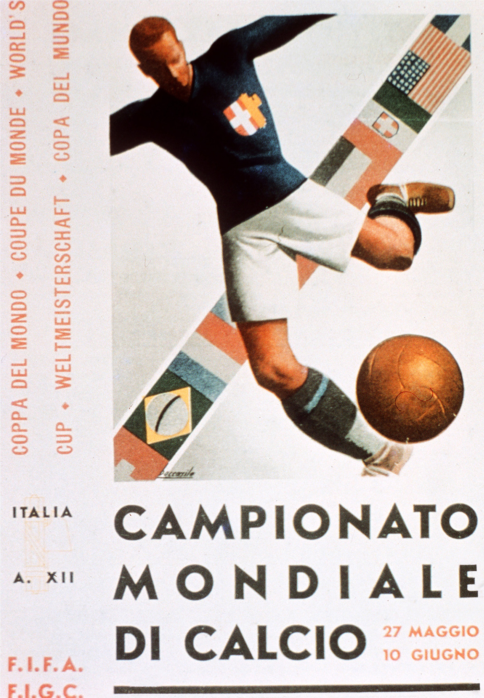
- Sede: Itália
- Participação: O pior desempenho. Eliminado na Primeira Fase (oitavas) pela Espanha (3x1). Foi "um jogo e tchau".
- Destaque da seleção: Leônidas da Silva
COPA DO MUNDO DE 1938
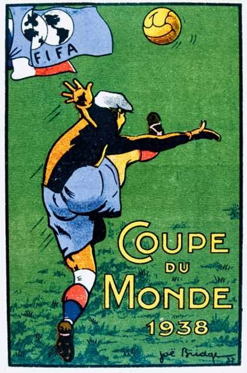
- Sede: França
- Participação: O Brasil avançou batendo Polônia (6x5) e Tchecoslováquia. Foi eliminado na Semifinal pela Itália (2x1). Venceu a Suécia (4x2) e terminou em 3º lugar.
- Destaque da seleção: Leônidas da Silva
COPA DO MUNDO DE 1950
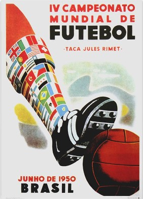
- Sede: Brasil
- Participação: O fatídico Maracanazo.O Brasil ficou em 1° no seu grupo ganhando do México(4x0) e Iugoslávia(2x0) e empatando com a Suíça(2x2), classificando para o quadrangular final. O Brasil avançou atropelando Suécia (7x1) e Espanha (6x1) no quadrangular final. Foi "eliminado" (perdeu o título) no último jogo pelo Uruguai (2x1).
- Destaque da seleção: Ademir de Menezes
COPA DO MUNDO DE 1954

- Sede: Suíça
- Participação: Passou pelo México(5x0) e empatou com a Iugoslávia(1x1). Foi eliminado nas Quartas de Final pela Hungria (4x2), na "Batalha de Berna".
- Destaque da seleção: Julinho Botelho
COPA DO MUNDO DE 1958

- Sede: Suécia
- Participação: CAMPEÃO 🏆, Passou em 1° no seu grupo vencendo a Áustria(3x0) e URSS(2x0) e empatando com a Inglaterra(0x0). A seleção passou por Gales (1x0) e França (5x2). Na final, bateu a Suécia (5x2).
- Destaque da seleção: Pelé e Garrincha
COPA DO MUNDO DE 1962
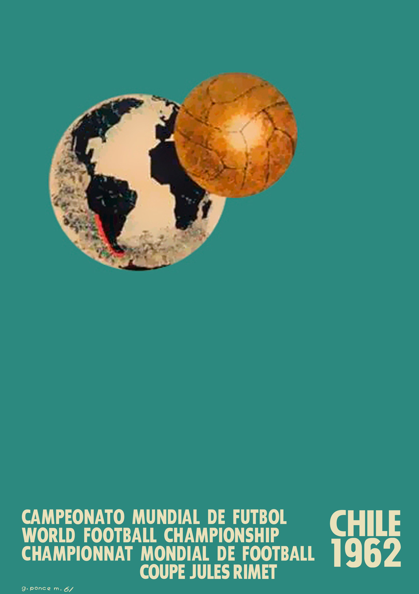
- Sede: Chile
- Participação: CAMPEÃO 🏆, Passou em 1° no seu grupo vencendo o México(2x0) e Espanha(2x1) e empatou com a Tchecoslováquia(0x0). A seleção passou pela Inglaterra (3x1) e Chile (4x2). Na final, bateu a Tchecoslováquia (3x1).
- Destaque da seleção: Garrincha
COPA DO MUNDO DE 1966
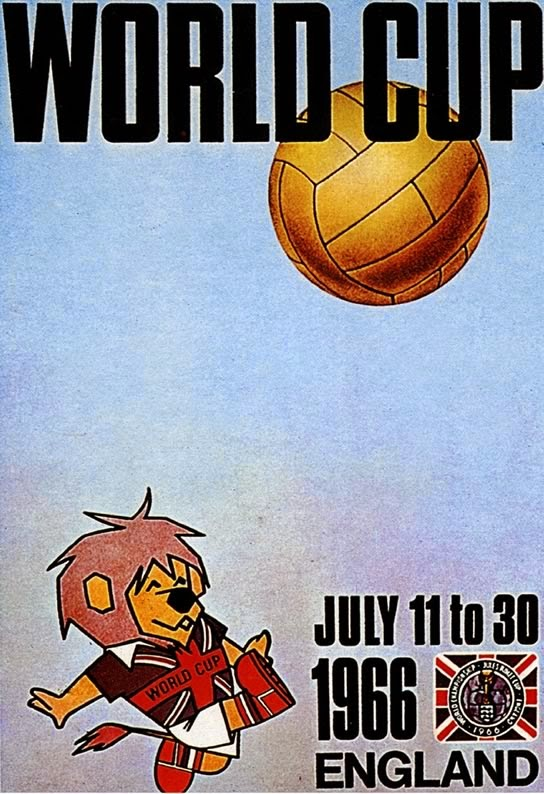
- Sede: Inglaterra
- Participação: O maior tropeço da era Pelé. Eliminado na Fase de Grupos após vencer a Bulgária a seleção perdeu para Hungria (3x1) e Portugal (3x1).
- Destaque da seleção: Tostão
COPA DO MUNDO DE 1970
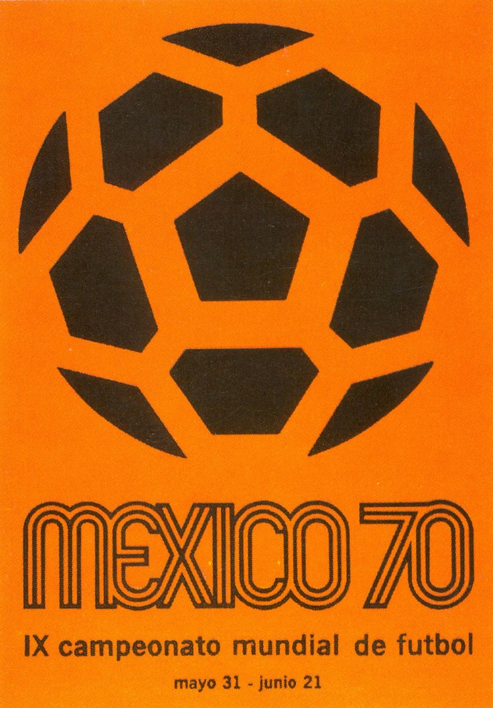
- Sede: México
- Participação: CAMPEÃO 🏆, Campanha perfeita. Passou em 1° no seu grupo vencendo a Tchecoslováquia(4x1), Inglaterra(1x0) e Romênia(3x2). A seleção passou pelo Peru (4x2) e Uruguai (3x1). Na final, goleou a Itália (4x1).
- Destaque da seleção: Pelé e Jairzinho
COPA DO MUNDO DE 1974
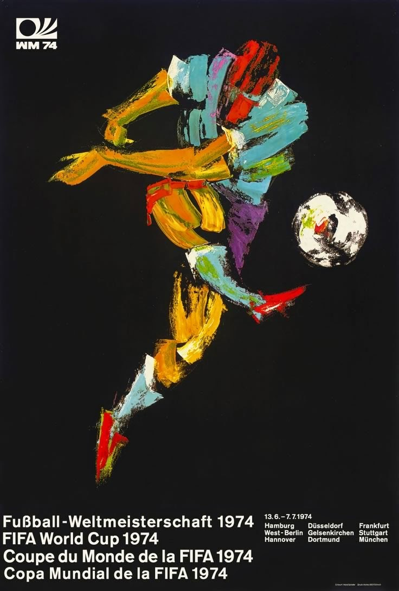
- Sede: Alemanha Oc.
- Participação: A seleção passou em 2° no seu grupo vencendo o Zaire(3x0) e empatando com a Iugoslávia(0x0) e Escócia(0x0). Avançou até a segunda fase de grupos, mas foi eliminado pela Holanda (2x0) de Cruyff. Perdeu o 3º lugar para a Polônia (1x0).
- Destaque da seleção: Rivelino
COPA DO MUNDO DE 1978
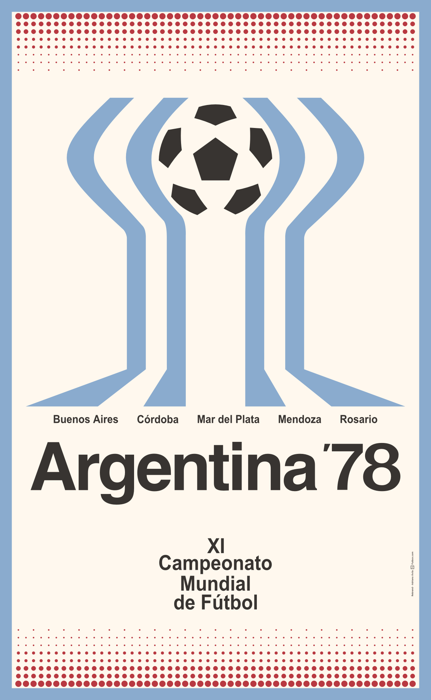
- Sede: Argentina
- Participação: A seleção passou em 2° no seu grupo vencendo a Áustria(1x0) empatou com a Suécia(1x1) e Espanha(0x0), mas foi eliminado da final pelo saldo de gols após o polêmico 6x0 da Argentina no Peru. Terminou em 3º lugar batendo a Itália (2x1).
- Destaque da seleção: Dirceuzinho
COPA DO MUNDO DE 1982
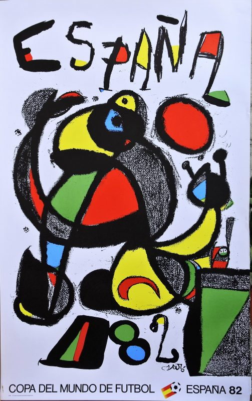
- Sede: Espanha
- Participação: A seleção de Telê passou em 1° no seu grupo vencendo a URSS(2x1), Escócia(4x1) e Nova Zelândia(4x0). Passando da Argentina por (3x1) e foi eliminada na Segunda Fase pela Itália (3x2) no Sarriá.
- Destaque da seleção: Zico e Falcão
COPA DO MUNDO DE 1986
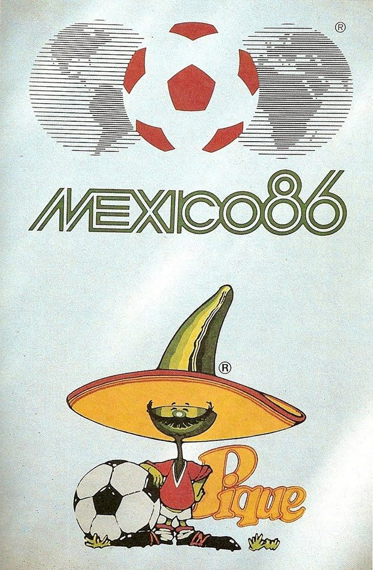
- Sede: México
- Participação: A seleção passou em 1° no seu grupo vencendo a Espanha(1x0), Argélia(1x0) e Irlanda do Norte(3x0). Eliminando a Polônia nas Oitavas por (4x0), mas acabou eliminado nas Quartas de Final pela França nos pênaltis (1x1 no tempo real, 3x4 pen).
- Destaque da seleção: Careca
COPA DO MUNDO DE 1990
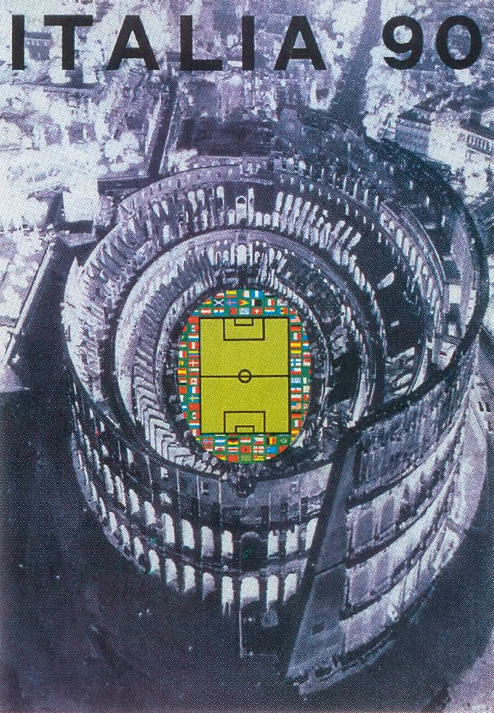
- Sede: Itália
- Participação: A seleção passou em 1° no seu grupo vencendo a Suécia(2x1), Costa Rica(1x0) e Escócia(1x0). Eliminado nas Oitavas de Final pela Argentina (1x0), com o gol de Caniggia.
- Destaque da seleção: Careca
COPA DO MUNDO DE 1994
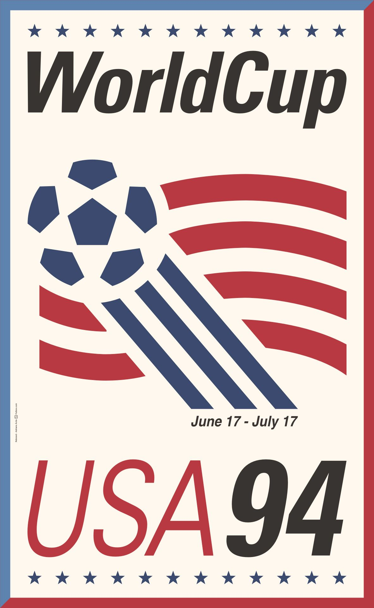
- Sede: Estados Unidos
- Participação: CAMPEÃO 🏆, A seleção passou em 1° no seu grupo vencendo a Rússia(2x0) e Camarões(3x0) e empatou com a Suécia(1x1). Passou pelo EUA(1x0) nas Oitavas, por Holanda (3x2) nas Quartas e Suécia (1x0) na Semi. Na final, venceu a Itália nos pênaltis (0x0 no tempo real, 3x2 pen).
- Destaque da seleção: Romário e Bebeto
COPA DO MUNDO DE 1998
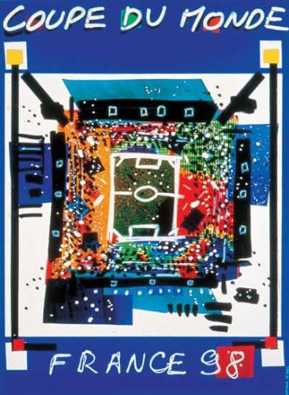
- Sede: França
- Participação: A seleção passou em 1° no seu grupo vencendo a Escócia(2x1) e Marrocos(3x0) e perdeu pra Noruega(2x1) Passou pelo Chile nas Oitavas, por Dinamarca (3x2) nas Quartas e Holanda(1x1, pen. 4x2). Foi eliminado na Final pela França (3x0).
- Destaque da seleção: Ronaldo
COPA DO MUNDO DE 2002
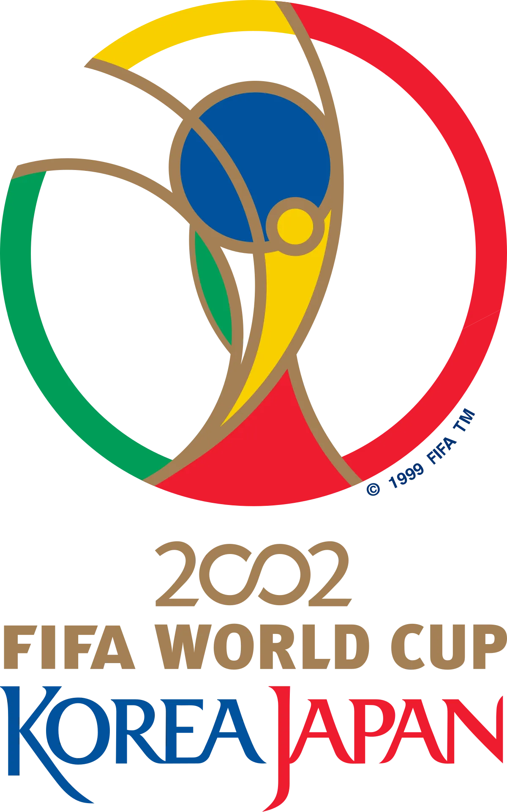
- Sede: Japão e Coreia do Sul
- Participação: CAMPEÃO 🏆, A seleção passou em 1° no seu grupo vencendo a Turquia(2x1), China(4x0) e Costa Rica(5x2). Passou pela Bélgica(2x0) nas Oitavas, por Inglaterra (2x1) nas Quartas e Turquia (1x0) na Semi. Na final, bateu a Alemanha (2x0).
- Destaque da seleção: Ronaldo e Rivaldo
COPA DO MUNDO DE 2006
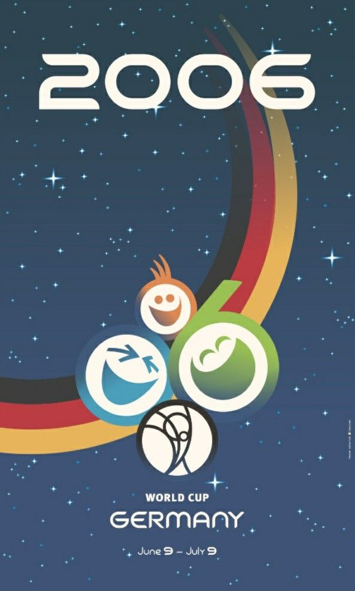
- Sede: Alemanha
- Participação: A seleção passou em 1° no seu grupo vencendo a Croácia(1x0), Austrália(2x0) e Japão(4x1). Eliminando a Gana(3x0) nas Oitavas e foi eliminado nas Quartas de Final pela França (1x0), gol de Zidane.
- Destaque da seleção:
COPA DO MUNDO DE 2010
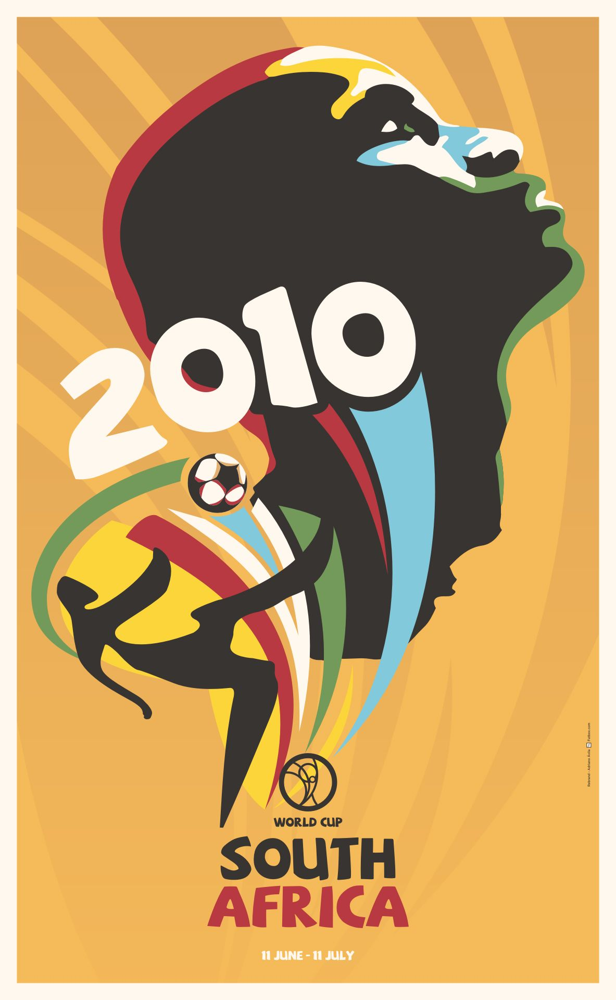
- Sede: África do Sul
- Participação: A seleção passou em 1° no seu grupo vencendo a Coréia do Norte(2x1) e Costa do Marfim(3x1) e empatou com Portugal(0x0). Passou do Chile(3x0) nas Oitavas e foi eliminado nas Quartas de Final pela Holanda (2x1).
- Destaque da seleção: Luís Fabiano e Robinho
COPA DO MUNDO DE 2014
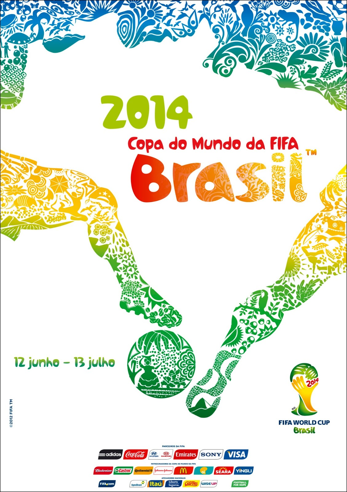
- Sede: Brasil
- Participação: A seleção passou em 1° no seu grupo vencendo a Croácia(3x1) e Camarões(4x1) e empatou com o México(0x0). Passou pelo Chile(1x1, pen 3x2) nas Oitavas, eliminou a Colômbia(2x1) nas Quartas, mas foi eliminado na Semifinal pela Alemanha (7x1). Perdeu o 3º lugar para a Holanda (3x0).
- Destaque da seleção: Neymar
COPA DO MUNDO DE 2018
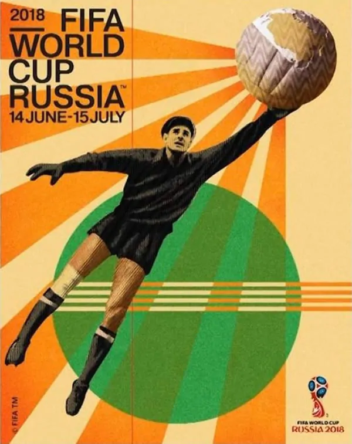
- Sede: Rússia
- Participação: A seleção passou em 1° no seu grupo vencendo a Costa Rica(2x0) e Sérvia(2x0) e empatou com a Suíça(1x1). Eliminou o México(2x0) nas Quartas, e foi eliminado nas Quartas de Final pela Bélgica (2x1).
- Destaque da seleção: P. Coutinho
COPA DO MUNDO DE 2022
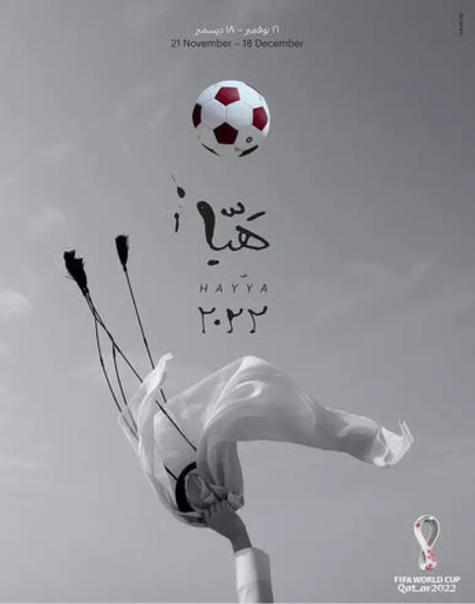
- Sede: Catar
- Participação: A seleção passou em 1° no seu grupo vencendo a Sérvia(2x0) e Suíça(1x0) e perdeu pro Camarões(1x0). Eliminou a Coréia do Sul(4x1) nas Oitavas e foi eliminado nas Quartas de Final pela Croácia(1x1, pen 4x2).
- Destaque da seleção: Neymar e Richarlison
COPA DO MUNDO DE 2026

- Sede: Estados Unidos, México e Canadá
- Participação: A Copa começa em Junho
- Destaque da seleção: A Copa começa em Junho